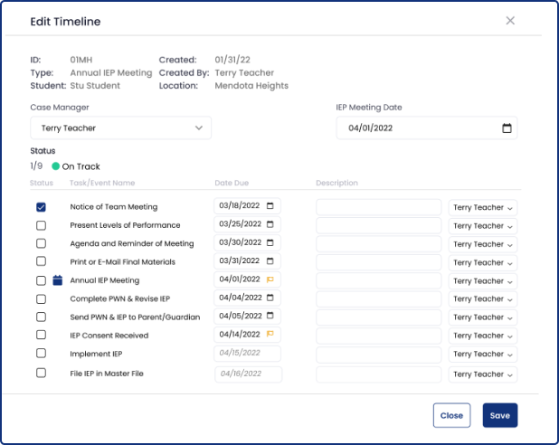
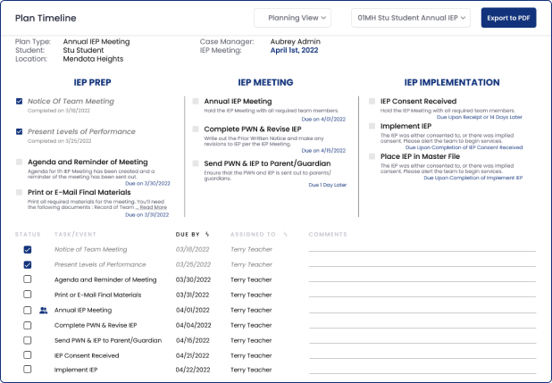

Project Overview
axis3, a platform to support Special Education teachers, was in need of a feature to help them manage their Due Process paperwork efficiently and without error.
Timelines is a feature to help Special Educators demystify Due Process so they can get back to what they do best -- teaching.
"Wait, what's Due Process?"
Due Process is the legally-mandated collection of tasks, paperwork, meetings, and reports that every Special Education teacher must adhere to for each of their students.
Role & Scope
As the Digital Experience Designer for Creatively Focused, I had the responsibility to conduct user research, lead ideation, develop prototypes, and conduct user testing.
Research Plan
Teacher burnout is a problem throughout all of education, but especially so for those in Special Education. When I first began at Creatively Focused, I wanted to know: "Why Special Educators? What's unique about their story?"
To figure this out, I developed a research plan that involved interviewing 25 educators from various sectors of Special Education.
The educators held various roles, including:
- Special Education Teachers
- Paraprofessionals
- Special Education Administrators
- Special Education Coordinators
After hours of interviews, it was clear that Due Process and all the paperwork associated with it was weighing down on Special Educators. This time sink had to be addressed -- enter, Timelines.
Hundreds of insights from the interviews allowed me to move forward with the data I needed to create an effective tool.

User Personas were crafted from the research to help drive my design decisions.
When I sat down to design Timlines, I knew that axis3 was already a mature platform -- it had a foundation on which I would need to design around. This included where the feature could populate, how much space it could take, and considerations to be taken regarding the tech stack of the platform.
With these caveats in mind, I began to prototype to ensure I could reach my goal of successfully meeting the requirements of each of the stories.
Journey #1: Special Education Teacher
The Special Education teacher's priority is ensuring that all Due Process tasks are completed on time. The timeline management module ensures that this priority is met.

It was important to limit errors and provide context to the tasks so that educators could let Timelines handle the process.
Journey #2: Special Education Administrators and Coordinators
Although administrators and coordinators will need to edit timelines from time-to-time, it was most important for them to be able to view all active Due Process projects at-a-glance so that they can ensure that all due dates are met.
Filters and colors were chosen to mirror platforms and terminology that administrators and coordinators were already familiar with in their role.
Journey #3: General Education Teachers and Parents/Guardians
Lastly, it was important that the Due Process Timeline was able to viewed in more digestible formats. These views can be leveraged during meetings or when discussing a particular student.

The planning view helps educators discuss a particular due process timeline in a group setting.
The timeline view helps communicate the process chronologically for parents and general education teachers.
Testing
Three rounds of user testing were conducted to help promote usability and ensure that all content was accurate. The tested users were both internal, cross-team, and external users. I conducted the user testing in-person and remote using both unmoderated and moderated methods to ensure the feature didn't miss the mark.
Metrics
The crux of any education initiative -- how would I determine if the feature is ultimately doing what it's set out to do?
Thankfully, in this case, it was quite easy:
- NPS scores provided in-app.
- # of state-recorded compliance issues reduced district-wide.
- Periodic feedback surveys.
For more information regarding axis3, please visit Creatively Focused
And much more...
In designing the Timeline feature, I also performed the following tasks:
- IA Audit of the knowledge base.
- Accessibility audit of the platform.
- Created a new design system including typography, icons, and components for the platform.
- ...and, alot more.
Ask me more in our interview!